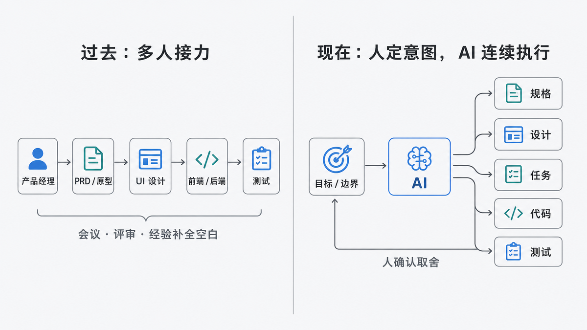
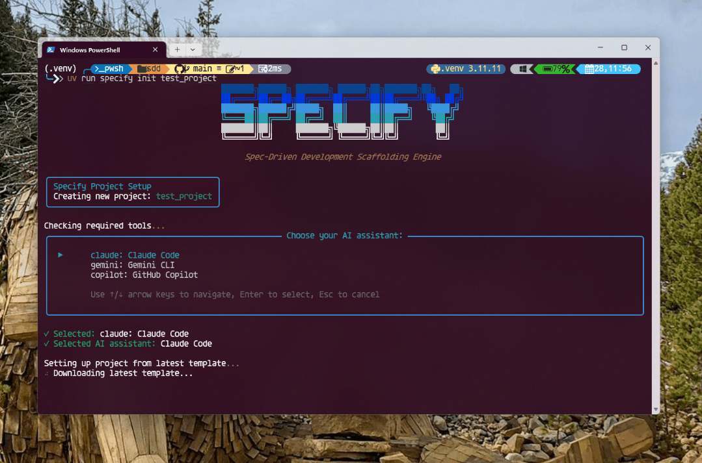
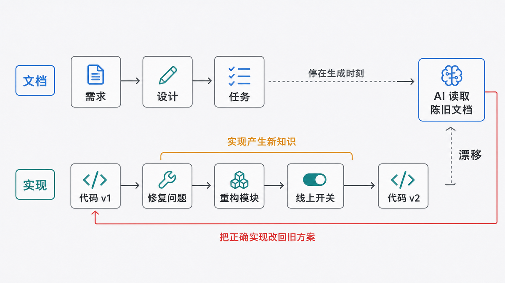
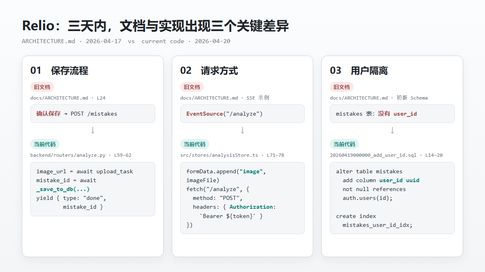
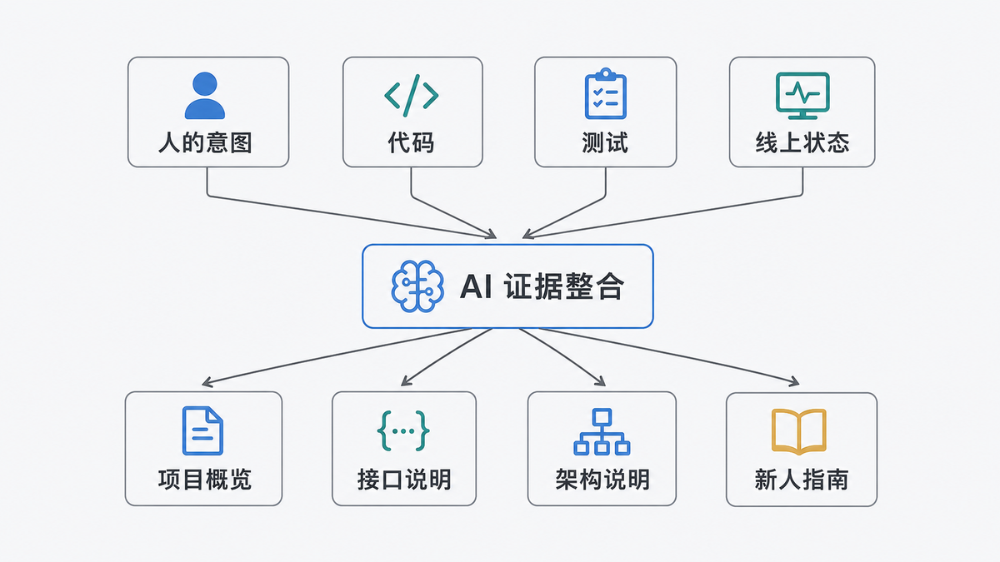
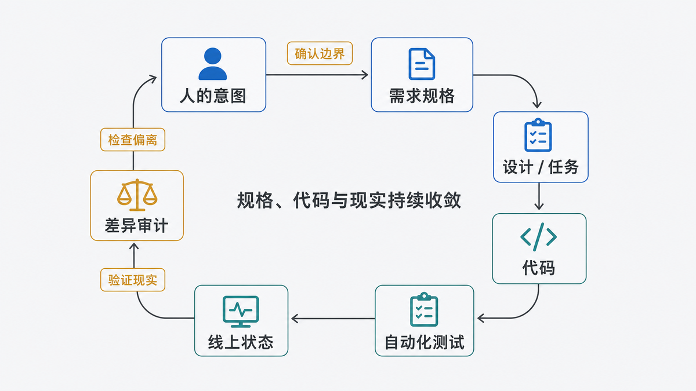

产品文档为什么总是过期？AI 正在换一种写法
2026 · AI 工程观察 · 刘志宇 Joy
过去几十年，一款软件通常是被一群人接力做出来的。
产品经理先从用户反馈、商业目标和老板的一句话里整理需求，写成 PRD，再画出原型。
PRD 说明为什么做、给谁做、做到哪里为止；原型把页面顺序和操作流程画出来。
UI 设计师接过原型，补齐视觉层级、交互状态和异常反馈。
前端工程师把设计稿变成用户能操作的页面，后端工程师把业务规则变成接口、数据库和任务。
测试工程师最后沿着需求和设计逐项检查。
这个流程看上去像一条生产线，真正让它运转的却不是文档，而是文档之间无数次人的解释。
比如一句“登录失败时给出友好提示”，产品经理不必在 PRD 里写清错误码、重试次数和按钮位置。
设计师会追问，前端会根据组件习惯处理，后端会说明哪些错误可以区分。
文档没有写完的部分，由会议、评审、经验和常识补上。
过去产品文档最重要的作用，不是完整描述系统，而是让一群人对同一件事形成足够相似的理解。
所以 PRD 天生是给人看的。
它负责对齐目标、划定开发边界、暴露分歧，也给后来的争议留下一份共同依据。
AI 编程把这个前提改掉了。
今天，同一个人可以把一份需求交给 AI，让它继续生成技术方案、任务列表、数据库、接口、页面和测试。
原来跨越四五个角色、持续数周的交接，可以压缩成一个下午里的几轮对话。
但 AI 不会自动拥有会议里的默契，也不会在看到一句模糊需求时主动走到工位旁边问清楚。
它会把文档当成上下文，甚至当成执行命令。
AI 时代，产品文档第一次从“给下一位同事看的交接材料”，变成了“可以直接产生代码的输入”。
这让文档更重要，也让旧的写法更危险。

图 1 · 示意图 · 过去依赖多人接力，AI 把多次交接压缩到同一执行链
01
过去的文档，是给下一位同事看的
传统开发流程里，每种文档都服务于一个具体交接。
PRD 从产品经理交给设计和研发，回答用户问题、业务目标、功能范围和验收口径；原型从产品交给 UI，回答有哪些页面、用户先做什么后做什么。
设计稿从 UI 交给前端，回答页面到底长什么样，以及加载、空白、报错、成功时分别显示什么。
接口文档从后端交给前端，回答请求需要什么、返回什么、失败时怎么办。
测试用例再把所有人的理解变成一组可以逐项检查的行为。
每一次交接都允许下一位专业人员继续判断。
产品经理不需要决定数据库怎么拆表，UI 不需要写出接口超时策略，后端也不会仅凭一个按钮颜色推断收费规则。
这种分工有两个隐藏前提。
第一，读文档的是人。
人会结合经验理解省略，会发现矛盾，会提出问题，也会拒绝明显不合理的要求。
第二，文档不是唯一依据。
团队每天沟通，评审原型，演示软件，再根据反馈修改。
2001 年的敏捷开发原则就强调业务人员和开发者要每天协作，能运行的软件才是衡量进展的主要标准。
换句话说，过去的产品文档更像一份协作协议，而不是一份可以直接编译的程序。
它不需要独自承担全部真相，因为团队本身就是补全信息的系统。
02
AI 把文档变成了可执行输入
AI 编程工具正在把传统接力流程折叠到一个上下文窗口里。
现在常见的做法是：先让 AI 把一句需求扩写成规格，再生成技术设计和任务列表，最后逐项实现。
GitHub Spec Kit把流程拆成 constitution、specify、plan、tasks、implement；Kiro则生成 requirements.md、design.md 和 tasks.md，再按任务执行。

图 2 · 数据来源 · GitHub Spec Kit 官方仓库 CLI 演示
这类方法通常被称为 Spec-Driven Development。
本文沿用更容易理解的中文，把它叫作文档驱动开发，简称 SDD：先把意图写成结构化文档，再让 AI 依据文档生成代码。
SDD 解决了 AI 编程最明显的问题。
一句“做个会员系统”会让模型任意补全支付方式、套餐、退款和权限。
规格先把用户故事、非目标、约束和验收条件写出来，AI 的发挥范围就小得多。
人也获得了几个暂停点：需求是否正确，技术方案是否合理，任务是否遗漏，确认之后才继续生成。
SDD 的价值不是文档更多，而是把原本藏在脑子里的决定提前暴露出来。
对于支付、权限、数据迁移、复杂业务规则，这一步非常有用。
写代码之前发现“删除到底是彻底删除还是进入回收站”，远比发布后再修便宜。
Kiro 对好规格的定义也很具体：需求应该可测试、不预设技术方案、无歧义、彼此一致，并覆盖必要状态（Kiro）。
但这里有一个容易被忽略的变化。
过去，一句模糊 PRD 会在几个人之间引发讨论。
现在，它可能直接生成一批结构完整、命名专业、测试全绿的错误代码。
同一份文档无法同时做好三件事：帮助人形成共识、约束 AI 执行、证明当前系统实际上怎样运行。
03
SDD 解决模糊，也制造新的漂移
SDD 最危险的误解，是把“代码按照文档生成”当成“文档和代码从此一致”。
它们只在生成的那个瞬间可能一致。
实现开始以后，工程师和 AI 会不断发现文档没有预见的现实：现有接口不能这样改，数据库里已经有旧数据，第三方服务存在限流，移动端没有足够空间，某个需求会破坏已有用户习惯。
于是实现发生变化。
一个错误被修掉，一次重构改变模块边界，一个线上开关暂时关闭功能。
代码往前走了，最初的 requirements.md、design.md 和 tasks.md 却可能停在原地。
下一次 AI 再读取这些文档，它甚至会把正确实现识别成“偏离规格”，然后认真地改回旧方案。

图 3 · 示意图 · 文档停在生成时刻，代码因修复、重构与线上配置继续向前
如果 SDD 只保证代码服从文档，它会把文档里的错误执行得更彻底。
SDD 至少有四个局限。
· 规格可以清晰，但仍然选错问题。AI 能发现一句话含糊，不能证明用户真的需要这个功能。Kiro 也明确承认，判断规格是否表达真实意图，最终仍然没有人之外的“标准答案”（Kiro）。
· 实现会产生新知识。技术限制、旧数据、性能和用户反馈，往往只有写到一半或上线后才出现。它们如果只进入代码，没有回到文档，漂移就开始了。
· 文档越多，冲突面越大。PRD、需求规格、技术设计、任务、测试和代码可能分别保存一个版本的系统。生成五份文档很便宜，确认哪份仍然可信并不便宜。
· 任务完成不等于产品完成。Spec Kit 项目的一条 issue 指出，原流程在 implement 后结束，合并、测试、文档更新和发布验证仍需人工补齐（GitHub）。
还有一个更实际的问题：并非每次修改都值得启动完整 SDD。
改一个错别字、修一条已经定位的判断条件，如果先生成需求、设计和十个任务，文档生产本身可能比修改更大。
Kiro 的最佳实践也建议把完整规格留给关键路径、复杂问题和需要审计的工作，明确的小修复可以直接处理（Kiro）。
好的流程不是文档越多越专业，而是每一项工作只生成它真正需要的约束。
04
三天，足够让文档和代码分家
我拿自己的小学错题产品 Relio 做了一次实验。
学生拍下题目，系统分析答案和错因；同一个知识点反复出错后，再生成深度报告和针对练习。
仓库里没有 README，但有 PRD、架构说明和项目计划。
我先隐藏 docs/，只让 AI 读取源代码、数据库迁移和配置，生成一份当前项目说明；然后再把人工文档拿出来逐项对照。
人工架构文档更新于 4 月 17 日，实验代码最后提交于 4 月 20 日。
中间只有三天，三个会直接影响开发的事实已经不同。

图 4 · 数据来源 · Relio 仓库 703f137，对照人工文档与当前代码
这不是排版问题，而是工作方式产生的漂移。
产品经理照着旧文档，会把已经取消的确认页面重新画进流程。
AI 编程代理照着旧文档，可能又写一套保存逻辑。
新同事复制旧请求，第一张图片都发不出去。
负责安全的人只看旧数据库设计，还会误判用户数据没有隔开。
完整过程和代码证据记录在 Relio 实验对照中。
只读代码生成的说明，在保存流程、请求方式和数据库结构上比三天前的人工文档更准。
但它回答不了另一类问题：为什么产品不是帮孩子搜答案，而是解释为什么反复做错？
为什么同一知识点错五次才生成报告？
为什么家长只能看聚合报告，不能逐题监控孩子？
这些是产品边界和历史取舍。
代码能留下结果，却恢复不了当时的理由。
文档与代码漂移，不是简单地选一边相信，而是先判断这个问题本来应该由谁证明。
05
不要寻找唯一真源，建立四层证据
很多团队试图选出一个“唯一真源”：以前选 PRD，后来选代码，现在又有人想选 AI 生成的规格。
这其实把不同问题混在了一起。
问“为什么做、不能做什么”，真源是人的意图和已经确认的决策。
问“系统具备什么实现”，真源是当前代码和配置。
问“哪些行为被持续保证”，真源是自动化测试、接口契约和数据库约束。
问“此刻线上真正开放了什么”，真源是部署状态、功能开关和监控。

图 5 · 示意图 · 人的意图、代码、测试与线上状态组成四层证据
代码里存在支付模块，不代表生产环境已经允许用户付款。
测试通过，也不能证明远程开关没有关闭。
PRD 写了一个功能，更不能证明它已经上线。
所以更准确的结构不是“文档驱动一切”，而是四层证据共同约束文档和代码。
不要寻找一个万能真源。让每个结论从真正能证明它的那一层生成。
人的意图层由人维护，保存目标、边界、非目标和取舍理由。
契约层尽量变成可执行证据，包括验收条件、接口定义、数据约束和测试。
实现层由代码和配置说明系统具备什么能力。
运行层由发布记录、远程开关和监控说明系统此刻真正怎样工作。
README、架构概览、接口说明和新人指南只是面向不同读者生成的视图。
它们可以保存和审核，但不应该冒充新的原始依据。
06
把单向的 SDD 改成闭环
SDD 不需要被放弃，需要补上回程。
单向流程是：
闭环流程还要继续：

图 6 · 示意图 · 实现不是终点，差异审计把新知识送回人的意图
需求逻辑改变时，先修改意图和验收条件，再让代码跟上。
实现中只发生重构、修复或可行性调整时，则从代码和测试反向更新技术说明，不要假装最初的设计从未改变。
Thoughtworks 发布的 Structured-Prompt-Driven Development 把这一点写得很清楚：逻辑修正先回到结构化提示再进入代码；重构产生的结构变化则从代码同步回提示，让两边共同演进（Martin Fowler）。
Kiro 也要求需求变化后重新生成设计和任务，设计变化后反向验证需求，并同步相关文件（Kiro）。
实现完成不是 SDD 的终点。只有规格、代码、测试和运行结果重新收敛，一轮开发才真正结束。
这个闭环有三个质量门。
· 开始前检查意图：解决谁的什么问题，成功是什么，明确不做什么。
· 合并前检查差异：哪些实现偏离了原规格，偏离是错误还是新知识。
· 发布后检查现实：线上配置、数据和用户行为是否支持文档里的结论。
GitHub Spec Kit 现在也提供 /speckit.analyze 检查不同规格产物之间的一致性，以及 /speckit.converge 对照代码、计划和任务补出剩余工作（GitHub）。
工具只是把检查做便宜。
决定“应该改代码还是改文档”的人，仍然必须理解产品目标。
07
一套可以直接照做的开发流程
不需要先建立一座文档宫殿。
一次功能开发，只要保留四类东西。
| 人工维护 | README.md | 项目的门面 |
| WHY.md | 为什么做、为谁做、边界是什么 | |
| DECISIONS.md | 重要选择、放弃方案、重看条件 | |
| RUNBOOK.md | 部署、故障处理、外部操作 | |
| AGENTS.md | AI 修改项目必须遵守的规则 | |
| 自动生成 | overview.md | 当前项目概览 |
| architecture.md | 当前模块和数据流 | |
| api.md | 当前接口说明 |
文件名不重要，所有权才重要。
WHY.md 和 DECISIONS.md 由人负责，因为代码无法恢复产品目标和被放弃方案。
接口、数据库、模块关系和启动方式尽量从代码、契约和配置生成，因为这些事实变化快，人工抄一遍最容易漂移。
开始一个中大型功能时，先给 AI 一份短 Feature Brief，而不是让它直接写完整 PRD。
请先不要写代码。
目标用户：
要解决的问题：
期望出现的可观察结果：
明确不做的内容：
不能破坏的现有行为：
业务与合规约束：
先读取当前代码、测试、接口定义和数据库迁移，
列出需求与现状的差异、仍然含糊的决定和主要风险。
不要用猜测补齐产品决定。这里最重要的是“先读取当前代码”。
规格不能在一个想象中的空白项目上生成，它必须面对仓库已经存在的现实。
确认差异后，再让 AI 输出技术方案和任务。
每一项验收条件必须能落到可观察行为，而不是“体验良好”“性能足够快”这类无法检查的词。
实现结束后，不要直接让 AI 重写所有文档。
先生成差异报告。
对照本次确认的需求、实现代码、测试和最终配置。
逐条列出：
1. 已按原规格实现的内容；
2. 实现偏离规格的内容；
3. 代码新增但规格没有记录的行为；
4. 规格写了但代码和测试无法证明的内容；
5. 必须由产品负责人确认的决定。
先输出差异，不要直接修改文档。人确认差异之后，再分别处理。
产品目标改变，修改 WHY.md、需求和验收条件。
技术实现改变，更新测试、接口契约和生成型说明。
线上状态不同，更新发布配置和运行记录，不能用代码存在代替“已经上线”。
先确认差异，再同步文档；先确认意图，再修改代码。
08
人写得更少，但负责更重要的内容
AI 不会让 PRD 消失。
PRD 仍然需要回答谁遇到了什么问题、为什么现在解决、成功如何判断、哪些内容不在本次范围。
它仍然是产品、设计、研发和业务形成共同理解的地方。
但 PRD 不应该继续承担数据库字段、当前接口参数、模块目录和每个页面实现状态。
这些事实变化太快，也已经有更直接的证据。
AI 会让两类文档分得更开。
一类是人写的意图：目标、边界、非目标、取舍和责任。
这些文字数量不多，却决定产品不会被做成另一件东西。
另一类是系统生成的现状：接口、数据结构、调用关系、启动方式和变更影响。
它们应该随代码、测试和配置重新计算。
过去，产品文档的任务主要是让人对齐。
现在，它还要约束 AI。
约束 AI 并不意味着把所有细节写成一座越来越大的文档仓库，而是让机器能区分：什么是人的决定，什么是当前实现，什么已经被测试，什么只在线上成立。
未来最可靠的开发方式，不是让代码永远服从一份文档，而是让意图、规格、代码、测试和运行状态持续闭环。
产品文档没有变得不重要。
它只是终于不必再假装自己是整个系统。
— 完 —
#AI编程 #软件开发 #技术文档 #程序员
本文基于 GitHub、Kiro、敏捷开发原则、Thoughtworks 方法文章与 Relio 仓库实验写成。产品能力与文档状态截至 2026-07-19。
参考资料
开发流程与 SDD
· 敏捷开发原则 · 协作与可运行软件
https://agilemanifesto.org/principles.html
· GitHub · Spec Kit
https://github.com/github/spec-kit
· Kiro · Specs 文档
https://kiro.dev/docs/specs/
· Kiro · Specs 最佳实践
https://kiro.dev/docs/specs/best-practices/
· Kiro · 规格需求分析
https://kiro.dev/blog/deep-spec-analysis/
闭环与质量门
· Martin Fowler · Structured-Prompt-Driven Development
https://martinfowler.com/articles/structured-prompt-driven/
· GitHub Spec Kit · implement 之后的流程缺口
https://github.com/github/spec-kit/issues/675
· GitHub Spec Kit · 规格清单是人工质量门
https://github.com/github/spec-kit/discussions/2387
Relio 实验
· Relio · 公开仓库
https://github.com/mrliuzhiyu/Relio
· Relio · 实验版本的人工架构文档
https://github.com/mrliuzhiyu/Relio/blob/703f137a9bb7eb395d5e61746d29cefa45c349be/docs/ARCHITECTURE.md
· Relio · 当前分析完成后自动保存的实现
https://github.com/mrliuzhiyu/Relio/blob/703f137a9bb7eb395d5e61746d29cefa45c349be/backend/routers/analyze.py
· Relio · 当前携带图片与登录信息的请求
https://github.com/mrliuzhiyu/Relio/blob/703f137a9bb7eb395d5e61746d29cefa45c349be/src/stores/analysisStore.ts
· Relio · 当前按用户隔离业务数据的迁移
https://github.com/mrliuzhiyu/Relio/blob/703f137a9bb7eb395d5e61746d29cefa45c349be/supabase/migrations/20260419000000_add_user_id.sql